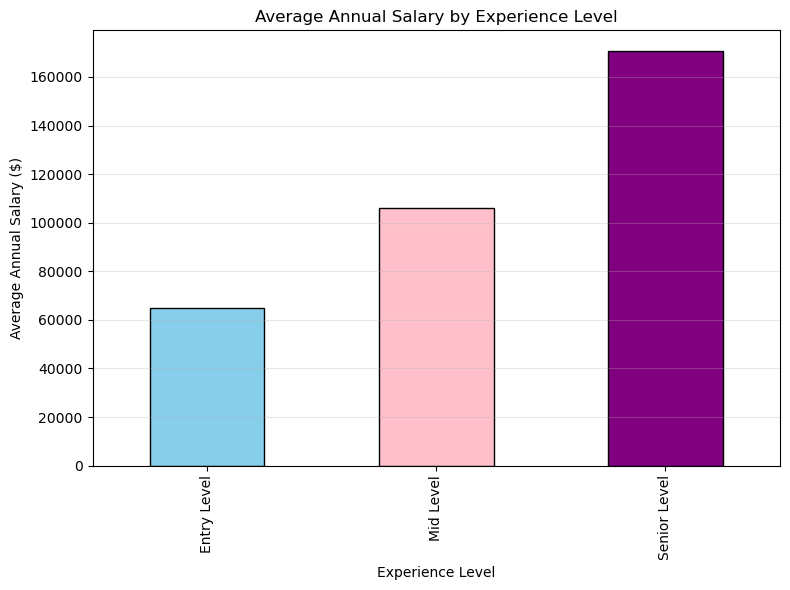
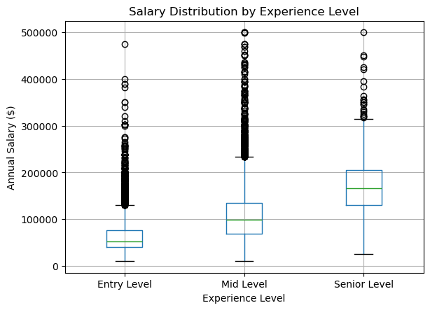
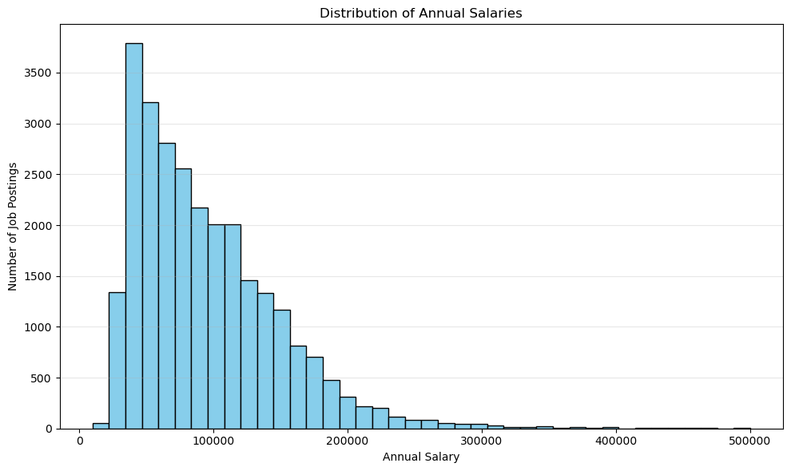

01
Objective
Research question: how do salaries vary across job roles and experience levels in a job postings dataset?
This was an individual project for my Programming for Data Analytics module.
02
Dataset
The dataset was supplied in five separate files, each holding different details about the same 123,849 job postings. It is a historical collection of postings, not a live feed of the job market, and salaries are in dollars.
03
Data Cleaning
A large part of this project was preparing the data:
- Checked each file for duplicate job IDs, then merged all five with outer joins on the job ID.
- Kept the columns needed for the question: job title, location, pay period, salary fields and experience level.
- Standardised many different experience-level labels into three groups, which left 93,218 postings with a valid level.
- Converted every salary to an annual figure, whatever pay period it was advertised in.
- Removed postings without salary data and unrealistic outliers (below $10,000 or above $500,000 a year), leaving 27,192 postings.
def clean_exp(x):
x = str(x).lower()
if "entry" in x or "junior" in x or "intern" in x:
return "Entry Level"
if "mid" in x or "associate" in x:
return "Mid Level"
if "senior" in x or "lead" in x or "director" in x:
return "Senior Level"
return np.nan
df["exp_level"] = df["formatted_experience_level"].apply(clean_exp)04
Feature Engineering
Salaries were advertised hourly, weekly, monthly or yearly, so they had to be put on the same basis before any comparison:
def convert_to_annual(row):
pay = str(row["pay_period"]).upper()
sal = row["avg_salary"]
if pd.isna(sal):
return np.nan
if "HOUR" in pay: return sal * 2080
if "WEEK" in pay: return sal * 52
if "MONTH" in pay: return sal * 12
return sal # yearly
df["annual_salary"] = df.apply(convert_to_annual, axis=1)I also used a lambda function to group salaries into Low, Medium and High bands (up to $50,000, up to $100,000, and above).
05
Exploratory Analysis
With a clean dataset, I used grouping and summary statistics to compare salaries by experience level and job title. Across all cleaned postings, the median annual salary was $82,500 and the mean was about $94,800, a gap that reflects a small number of very high salaries.
06
Visualisations
I created six charts with Matplotlib: a histogram, bar chart, box plot, pie chart, scatter plot and line chart. Three are shown here.



07
Findings
- Experience level was the clearest driver of salary. Average advertised salary rose at each step from entry to mid to senior level.
- Senior roles had the widest spread of salaries, while entry-level salaries were more tightly clustered.
- The distribution is right-skewed: most postings sit at the lower end, with a long tail of high salaries.
- Mid-level roles made up most postings in the cleaned data (60.8%), followed by entry level (34.6%) and senior level (4.6%).
08
Limitations
- Only about one in five postings (27,192 of 123,849) had usable salary data, so the salary findings describe that subset.
- The dataset is a historical collection of postings, so it does not describe the current job market.
- Postings show advertised salaries, which may differ from what people are actually paid.
- Experience levels were assigned by keyword matching, so some postings may be grouped imperfectly.
09
Lessons Learned
- Large datasets hide small problems. Inconsistent labels and pay periods only became visible once the five files were combined.
- Standardise before comparing. Salary figures meant little until they were on the same annual basis.
- State the limits. Being clear about how much data survived cleaning is part of the analysis.